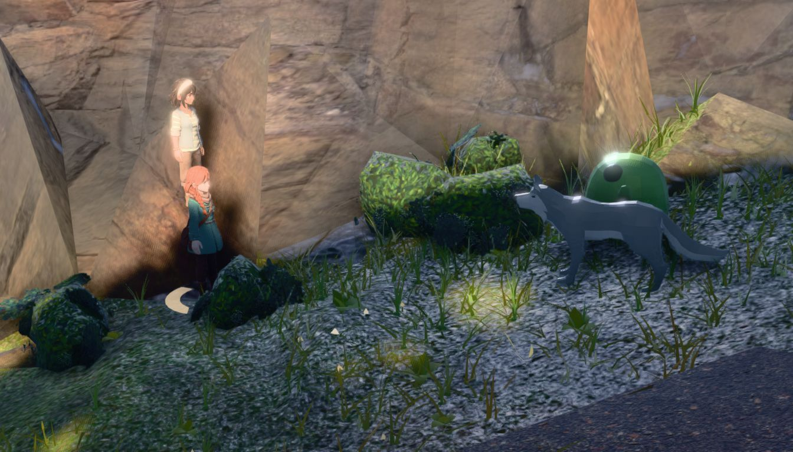
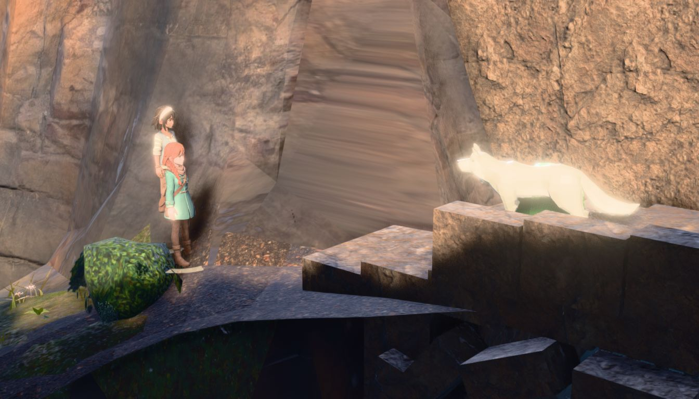

THE RULER AUDIT — which shipped decisions rest on edgeRGB, and do they survive
2026-08-09 · world arena only (?arena=world) · data eyesort-bodies.json,
joined.json, tone-compare.json, findings.txt, and the 62-site tone censuses
../../battle-decide/tone-band{,2}.json. The defect this board answers is the one
the party-albedo lane exposed: edgeRGB is ONE SIGNED DIFFERENCE OF MEANS
over a whole silhouette, so a body brighter than its surround at the top and darker at the bottom cancels
itself. The six-band alternative was handed off untested. This board tests it, and then asks every shipped
decision in the world-arena path whether it ever read the broken number.
THE SHORT ANSWER, in three parts.(1) Almost nothing shipped reads it. The placement refusals (sun, one-surface dominance), the safe rect,
the pitch ranker scoreView and the keep containment are all geometric or histogram
terms that never touch a tonal number — clean passes, and the reason the arc is not in trouble.
(2) The one shipped decision that does read it is TONE's boom chooser, and its answer is
ruler-dependent at 26 of 61 census sites.(3) The six-band ruler earns its keep at BODY level and changes nothing at SITE level — so
"edgeRGB runs backwards across sites" survives de-cancelling and PLACE was right not to use a
tonal metric. Nothing about TONE's default was flipped: the alternative ships as ?btband=1,
default off, with the shipped picks proven identical 62/62.
1. THE AUDIT — every shipped decision in the world-arena path
shipped decision
where
reads edgeRGB?
survives?
TONE boom chooser (score + refusal margin 0.15)
battle_world.jstoneProbe
DIRECTLY — the score IS 0.5·mean + 0.5·min − 0.35·clutter over per-body edgeRGB
CONDITIONAL — see §3
PLACE sun refusal (sunMargin 0.5)
stageArena ladder
NO — four rays per candidate against the occluder set (site.lit)
NO — a 6×6×6 colour histogram of the display frame; the biggest bin's share
clean pass
the pitch ranker (scoreView, wBack/wBoom/wPitch)
solveArena
NO — nine-sample visibility + background depth + boom clearance
clean pass
keep:'foes' containment + keepBias 0.62
solveShot
NO — projection of each body's own Box3
clean pass
keepSafe safe rect (.ebb-partywin, .ebb-cmdwin)
solveShot / safeRects
NO — DOM rects in NDC against the canvas rect
clean pass
the 180° refusal (axisCheck)
solveShot
NO — a perspective-divided ordering test
clean pass
the tonal-separation lane's aerial re-anchor
deleted (029526e7)
n/a — it measured null and was removed; the lane's shipped output IS TONE
n/a
RIM polarity (rimAuto, autoDead 4)
battle_world.js, ?brim=1
INDIRECTLY — sign(edgeL − ringL), whole-silhouette means, the same cancelling shape
DEFAULT OFF and recommended against — not a shipped decision
Read the middle column twice: the metric that was found defective was never in the placement path at all.
Every refusal that moves where the fight happens is geometry or a colour histogram. The lane that hurt is the one
that picks the boom.
2. IS THE SIX-BAND RULER ANY BETTER — an eye sort, then the numbers
57 bodies at 39 sites out of the shipped decide census (../census/pair/, the same
frames the party-albedo lane photographed), scored per body: 2 = reads immediately as a separate figure,
1 = compromised, 0 = effectively lost. The sample is the disagreement set — every body the two
rulers disagree about, plus 20 drawn at random from the bodies neither flags. One rater, and NOT blind: the
disagreement lists were computed before the looking. Treat the direction, not the level.
ranking "does this body read"
n
edgeRGB
6-band mean
6-band worst
AUC, reads(2) vs not(0/1) — all targets
57
0.510
0.580
0.564
AUC, reads(2) vs not(0/1) — excluding teammate overlap
49
0.591
0.820
0.792
concordance with the 3-level score — excluding teammate overlap
49
0.590
0.818
—
The exclusion is not a convenience, it is the finding. 8 of the 57 targets are compromised because one
party body is standing behind the other, and NEITHER RULER CAN SEE THAT BY CONSTRUCTION — the meter renders
each body against a cast-free background, so a teammate never occludes it. Five of the eight are Vesper behind
Maren in the 27 mm two-shot. Include them and both rulers collapse to chance, which is a true statement about
what the meter measures rather than about which ruler is better.
On the bodies a ruler could in principle see, six-band is clearly better and the failure mode is exactly the
predicted one: of the 20 bodies edgeRGB < 5 calls failing, 14 read perfectly well by eye and
none is lost. Of the 20 the six-band ruler flags at the same census-wide rate, 10 read, 9 are compromised and 1 is
lost.
s040 — Vesper reads edgeRGB1.60, the
worst party reading in the census. He is plainly visible: dark top on a sunlit tan cliff, dark boots on a pale
deck. Bands 12.3 / 9.1 / 8.7 / 11.3 / 29.9 / 38.1 — the top and the bottom have OPPOSITE sign and the whole-
silhouette number annihilates them against each other.

s036 — Maren in the rock crevice. edgeRGB 5.52
says fine; six-band says 4.89, the worst reading on the board. By eye she is compromised — the dress sits in
the shadow at the rock's own value and only the hair carries her.

s053 — the cream wolf on pale sandstone that the safe-rect
lane argued about. Compromised by eye in both rulers' books; the blob behind it is genuinely lost. This is the site
whose "regression" was settled on a single-site edgeRGB delta — a number this arc has since shown is
unusable at N=1.
and at SITE level the fix changes nothing — which is the other half of the answer
The placement lane's headline was that the tonal metric runs backwards across sites: good frames score
LOW because a lit body against near-black is enormous RGB contrast. De-cancelling does not rescue it. Against the
existing decide eye sorts:
site-level ranking of good / acceptable / bad
shipped arm (n=62)
bplace=0 arm (n=61)
sil.edgeRGB (whole cast, signed difference)
0.335
0.265
sil.bandMin (six column bands, worst)
0.292
0.243
mean of the six column bands
0.298
0.302
one-surface dominance, inverted (the shipped axis)
0.829
0.793
Every tonal variant sits far below 0.5 — backwards, not merely weak. PLACE's ruling that
"TONE is right at its own job and is NOT a placement metric" survives the ruler fix intact.
3. TONE, RE-DERIVED ON THE FULL 62-SITE CENSUS
The probe now also reports the six-band contrast per body and a bScore per rung —
reported, never scored, the same discipline ringL already follows. Receipt that the field moved
no pick: chosen boom identical 62/62 against census-surfAfter.json, the last census of the
pre-edit shipped build at the same pinned ORBIT.yaw, and identical 62/62 across two runs of the
edited build.
on the 61 sites with a tone reading
edgeRGB score (shipped)
six-band score
the boom moves off the geometric solver's rung at
39 / 61 (64%)
29 / 61 (48%)
argmax before any margin agrees with the other ruler
29 / 61
FINAL pitch differs between the rulers
26 / 61 sites
incumbent rung scores NEGATIVE
5 / 61
0 / 61
refusal bar |inc|·0.15 under 0.5 (inert; median rung span 3.94)
10 / 61
0 / 61
per-body six-band ÷ edgeRGB, p50, inside the probe (n=954)
party 1.55 · foe 1.18
Three things this says, in order of how much they matter.
(a) The cancellation is real inside TONE's own probe, not just in the offline meter, and it is
side-asymmetric: the whole-silhouette number understates a party body's contrast by ~55% and a foe's by ~18%. So
the min term — the one that exists to stop a boom buying a good average and one invisible body — is
partly ranking BODY SHAPE, and it is the party's shape it penalises.
(b) The refusal margin is not a bar.|inc| · margin on a score that can reach zero or go
negative is degenerate: at 10 of 61 sites the bar is under 0.5 against a median rung-to-rung span of 3.94, so the
refusal is inert at one site in six — and at 0.15 the chooser overrules the geometric solver at 64% of sites,
which is a preference, not the refusal its own comment claims. This defect is INDEPENDENT of which ruler is used
and was invisible to the four-site derivation that set 0.15. Under the six-band score the incumbent is never
negative and the bar is never degenerate.
(c) And the pick is ruler-dependent at two sites in five — which means the "water +18% to +63%, crag
−6.5%" verdict the margin was ratified on used the defective ruler to choose the boom AND to score the
result. That is circular and those four numbers should be treated as unproven, not as wrong.
WHY NOTHING WAS FLIPPED. Promoting the six-band ruler changes the picture at 26 of 61 sites and
nobody has looked at those 26 in both arms. A single-rater sort would not settle it either: two raters on
this arc's own frames agree 43/62 and differ by 9.7 points of bad. The eye evidence that exists is BODY-level, on
the decide frame, from one non-blind rater — enough to justify building the A/B, not enough to move a
shipped default. ?btband=1 makes the next lane's job one command:
node tools/battle_decide.mjs --port=3000 --mode=census --q=btband=1 against the shipped arm, then
sort both by eye.
4. WHAT THIS COSTS THE ARC'S WRITTEN NUMBERS
SUSPECT. Every single-site edgeRGB delta, which the arc already knew (the meter moves 4.50
over six repeats of one battle) and which this audit adds a second reason to distrust — the number is also
shape-biased. Named: the s053 "the library says the new site is BETTER (5.63 → 10.37)" argument; the safe-rect cost
line "sil.edgeRGB median 9.07 → 9.25"; the fresnel's "mean edgeRGB 9.27 → 10.89, 24 better
/ 2 worse"; the TONE contrast verdicts at water / crag / meadow / forest; and the edgeRGB < 5 failure
threshold itself, which by eye flags 14 bodies that read for every 1 it flags that is lost.
STANDS. Everything that never read the metric: the placement census's axis ranking (one-surface dominance
0.922/0.937, sun 0.843/0.553, sky 0.68, view.back 0.733, relocation 0.450); the surface refusal's
29→15 census move; the safe rect's 21/62 → 4 panel-overlap counts; the zero-foe-dwell fix; the 180° receipt; the
staging and first-frame timings. And the placement lane's tonal finding stands twice over — the metric runs
backwards across sites at 0.335, and the de-cancelled version is no better at 0.292.
WHAT CHANGES SIGN. "The failures concentrate on small clothed party bodies" was already retracted by the
party lane. This board adds the eye evidence: on 49 bodies the eye's own party/foe split is party 12/29
not-fully-reading against foe 8/28 — a difference far smaller than either ruler's threshold count claims, and
the largest single cause of a party body not reading in this census is the other party body standing in front of
it, which is a shot problem, not a paint problem and not a boom problem.
Residuals, named
The eye sort is one rater and not blind to which ruler flagged what. It is a discrimination test between
two rulers, not a level.
The body-level sort is on the decide frame; TONE ranks the round
establishing boom, and this arc has already measured that the two sorts disagree at a third of sites.
At s047 the recorded camera pitch differed between two runs while TONE's own decision was
bit-identical: the probe landed after the first turn had started and reported
applied:false — a beat already owns the camera. That is a pre-existing race between model-load network
time and the first turn, untouched by this lane.
Two sites (s033, s039) move in the third decimal between runs — the sky-dome cloud drift the tone
lane already named. No pick moved.
arena_playtest's organic suite fails "no hostile zone reachable". Proven
pre-existing: the same failure reproduces with this lane's change reverted to HEAD.